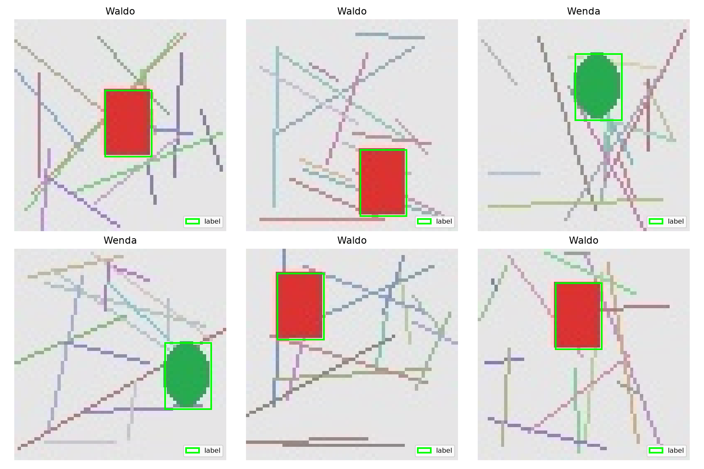
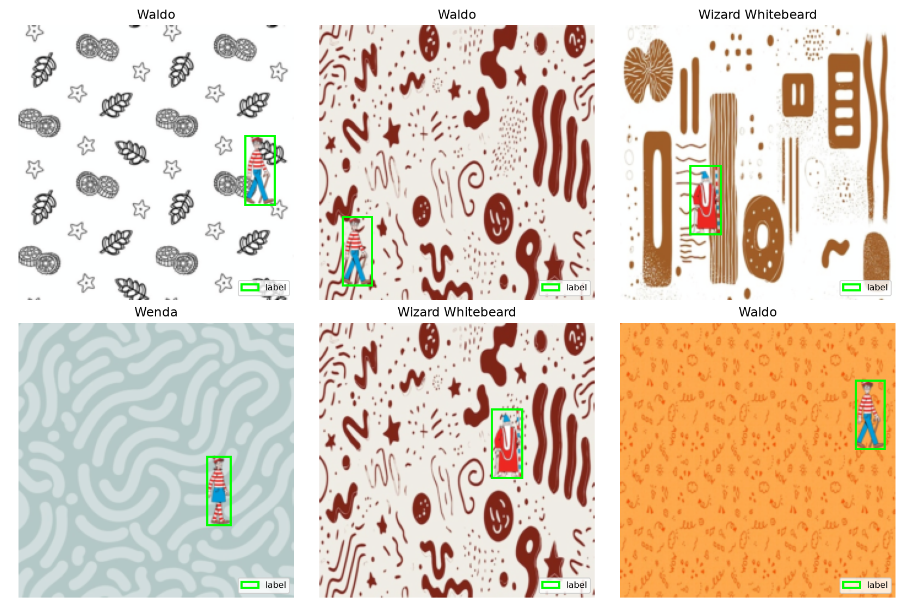
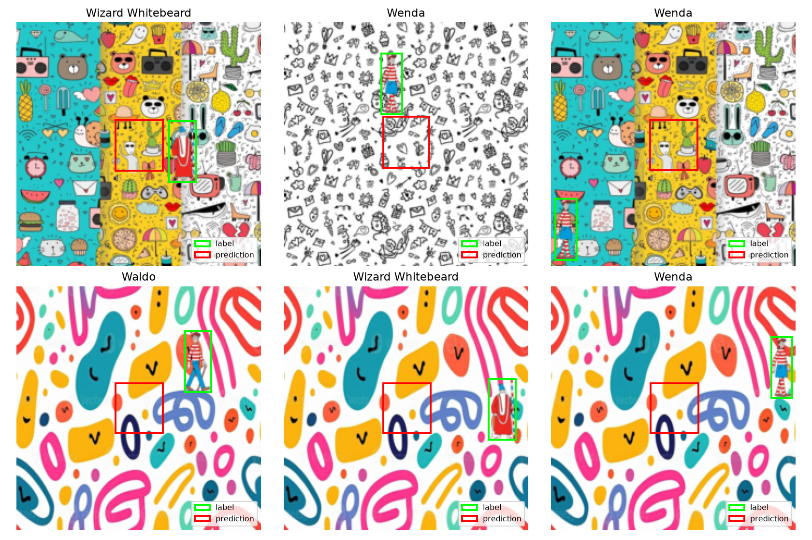

flowchart TD A[Reviewed backgrounds] --> B[Remove exact duplicates] B --> C[Separate source backgrounds] D[Three transparent cut-outs] --> E[Composite one object] C --> E E --> F[Image + class + normalized box] F --> G[Custom detector] F --> H[YOLOv8n] G --> I[Held-out test protocol] H --> I
Synthetic Object Detection
Learning what an object is and where it is from automatically generated labels
A custom ResNet18 detector and YOLOv8n on a controlled single-object task.
Overview
Object detection combines two decisions: identify the object and locate its extent. Here, labels come from construction. A transparent character is placed at a known position on a cluttered background, producing both a class label and a bounding box without manual annotation.
The custom detector fine-tunes ResNet18 with separate classification and box heads. YOLOv8n provides a reference on the same images. Three fixed cut-outs keep the task controlled; separating background sources tests whether the models can handle new scenes.
The notebook contains the executable experiment. This report reads saved results, so rendering it does not start training.
Building the data
The experiment uses Waldo, Wenda and Wizard Whitebeard. A source collection is divided into training, validation and test backgrounds before compositing. The approved publisher cut-outs and 22 reviewed background candidates are saved with source manifests. Exact decoded duplicates are removed, and each image records its background source in a manifest. Near duplicates still require visual review.
One cut-out is alpha-composited onto each background. Transparent margins are cropped, and its placement defines the normalized YOLO label:
\[ \left[\frac{x+w/2}{W},\frac{y+h/2}{H},\frac{w}{W},\frac{h}{H}\right]. \]
The planned splits contain 5,000 / 1,000 / 200 composites. Classes are balanced to within one image. The cut-outs retain their size and aspect ratio. Training uses color jitter and horizontal flips; flips update the box center as well as the image. Validation and test preprocessing are deterministic.
The custom detector
An ImageNet-pretrained ResNet18 produces a spatial feature map. The classification head pools it globally and predicts three logits. The box head keeps a 4 × 4 grid, preserving coarse spatial layout for regression.
The box output is parameterized so it fits inside the image. Predicted widths and heights lie between zero and one; each center lies between half the box size and one minus half the box size. This prevents negative sizes and off-image boxes. Layer normalization and small initial output weights keep pretrained feature magnitudes from saturating the box sigmoid during early training. The first pilot revealed this failure as almost zero-width boxes; the revised head has a dedicated regression test that fits known boxes from large-magnitude features.
The training objective combines cross-entropy and Smooth L1:
\[\mathcal{L}=\mathcal{L}_{\mathrm{class}}+5\mathcal{L}_{\mathrm{box}}.\]
AdamW uses learning rate and weight decay of 1e-4. Validation loss selects the best checkpoint; five epochs without improvement stop training. Epoch losses are weighted by image count. Resume checkpoints include optimizer state, random states and a fingerprint of the generated data.
What counts as a correct detection?
A true positive needs the correct class and IoU at least 0.5. Every image has one target, and the custom model emits one prediction. Precision and recall must therefore be equal for this model. Class 0 is a real class, not padding.
Mean IoU measures localization independently of class. AP50 ranks predictions by confidence and integrates an all-points interpolated precision-recall curve. This is explicitly named map50_all_points, avoiding confusion with native Ultralytics AP.
YOLO is evaluated from its selected best checkpoint on the test split. A second pass retains the highest-confidence detection per image, with a confidence floor of 0.001, and uses the same evaluator as the custom model. If YOLO emits no box, the target still counts toward recall. Native multi-detection metrics remain separate from this constrained comparison.
| Setting | Custom detector | YOLOv8n |
|---|---|---|
| Input resolution | 224 × 224 | 640 × 640 |
| Training budget | Up to 20 epochs | Up to 100 epochs |
| Initialization | ImageNet ResNet18 | Pretrained YOLOv8n |
| Shared evaluation | One box per image | Top box, or abstention |
These differences make YOLO a reference, not an equal-budget architecture ablation.
Results
The corrected character-data benchmark is pending. No historical scores are reused, and the repository remains private.
Execution check
The notebook completed a two-epoch CPU execution check on 24 training, 6 validation and 6 test geometric fixtures. This exercises the custom pipeline through generation, training, checkpoint selection, evaluation and figure export. YOLO is skipped in this mode.
Fixture scores are not evidence of character detection accuracy.

Real-image pilot
A short run used 96 training, 24 validation and 24 test character composites, with two custom-model epochs and one YOLO epoch. Both models were evaluated on the held-out test images. This validates execution of the real-data path; it is not the planned 20/100-epoch benchmark.
| Shared-protocol metric | Custom (2 epochs) | YOLOv8n (1 epoch) |
|---|---|---|
| precision | 0.0000 | 0.2500 |
| recall | 0.0000 | 0.2500 |
| mean_iou | 0.0452 | 0.3243 |
| map50_all_points | 0.0000 | 0.1129 |


Why the original scores are excluded
The earlier notebook omitted class 0 in parts of evaluation and visualization, augmented validation randomly, reused background sources across splits and reported YOLO validation scores as its comparison. It also used the model before defining it and recreated inconsistent test preprocessing.
The revised pipeline changes those behaviors. It also gives the box head spatial features and valid coordinate bounds. A new run is necessary: old scores cannot be attached to the revised model or data split. The audit records the specific corrections and validation scope.
Limits of the experiment
There are three fixed cut-outs, one object per image, fixed object scale and no occlusion or negative scenes. The models may learn the cut-outs’ appearance and compositing cues. Performance on new backgrounds would not establish performance on new artwork, poses or real photographs.
Reproduce the run
Follow data preparation and run the notebook in experiment mode. Colab instructions cover using a GPU while the repository is private. After execution:
python scripts/build_report.py
quarto renderThe HTML is written to docs/. Publication remains disabled until the full experiment and report have been reviewed.
References
The project grew from an ELTE Deep Network Development exercise. Task template: Tamás Takács and Imre Molnár. Original implementation: Robert Ouko Oyombe.